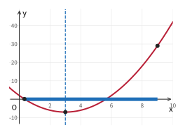
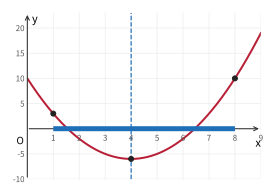
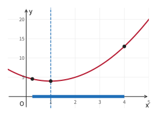

別冊練習問題 5 の解答 指数関数の最大・最小
(1) \(-1\leqq x\leqq 2\) のとき、関数 \(y=3^{2x}-6\cdot3^x+2\) の最大値・最小値と、そのときの \(x\) の値を求めよ。
\(t=3^x\) とおいて範囲を求める
\(-1\leqq x\leqq 2\) で \(3^x\) は増加するから
\[\dfrac{1}{3}\leqq t\leqq 9\]\(y\) を \(t\) の式にする
\[y=3^{2x}-6\cdot3^x+2=t^2-6t+2\]\[y=\left(t-3\right)^2-7\]範囲内での最大・最小
頂点 \(t=3\) は範囲内。頂点と両端の値を比べる。
\[t=\dfrac{1}{3}:\ y=\dfrac{1}{9},\quad t=9:\ y=29,\quad t=3:\ y=-7\]\(y=t^2-6t+2\) のグラフ（太線が \(\dfrac{1}{3}\leqq t\leqq 9\) の範囲）。

答え（\(x\) の値に戻す）
最大値 \(29\)（\(x=2\)）、最小値 \(-7\)（\(x=1\)）。
【答案】
\[\text{最大値 }29\ (x=2),\quad \text{最小値 }-7\ (x=1)\]答
(2) \(0\leqq x\leqq 3\) のとき、関数 \(y=2^{2x}-8\cdot2^x+10\) の最大値・最小値と、そのときの \(x\) の値を求めよ。
\(t=2^x\) とおいて範囲を求める
\(0\leqq x\leqq 3\) で \(2^x\) は増加するから
\[1\leqq t\leqq 8\]\(y\) を \(t\) の式にする
\[y=2^{2x}-8\cdot2^x+10=t^2-8t+10\]\[y=\left(t-4\right)^2-6\]範囲内での最大・最小
頂点 \(t=4\) は範囲内。頂点と両端の値を比べる。
\[t=1:\ y=3,\quad t=8:\ y=10,\quad t=4:\ y=-6\]\(y=t^2-8t+10\) のグラフ（太線が \(1\leqq t\leqq 8\) の範囲）。

答え（\(x\) の値に戻す）
最大値 \(10\)（\(x=3\)）、最小値 \(-6\)（\(x=2\)）。
【答案】
\[\text{最大値 }10\ (x=3),\quad \text{最小値 }-6\ (x=2)\]答
(3) \(-2\leqq x\leqq 2\) のとき、関数 \(y=2^{2x}-2^{x+1}+5\) の最大値・最小値と、そのときの \(x\) の値を求めよ。
\(t=2^x\) とおいて範囲を求める
\(-2\leqq x\leqq 2\) で \(2^x\) は増加するから
\[\dfrac{1}{4}\leqq t\leqq 4\]\(y\) を \(t\) の式にする
\[y=2^{2x}-2\cdot2^x+5=t^2-2t+5\]\[y=\left(t-1\right)^2+4\]範囲内での最大・最小
頂点 \(t=1\) は範囲内。頂点と両端の値を比べる。
\[t=\dfrac{1}{4}:\ y=\dfrac{73}{16},\quad t=4:\ y=13,\quad t=1:\ y=4\]\(y=t^2-2t+5\) のグラフ（太線が \(\dfrac{1}{4}\leqq t\leqq 4\) の範囲）。

答え（\(x\) の値に戻す）
最大値 \(13\)（\(x=2\)）、最小値 \(4\)（\(x=0\)）。
【答案】
\[\text{最大値 }13\ (x=2),\quad \text{最小値 }4\ (x=0)\]答